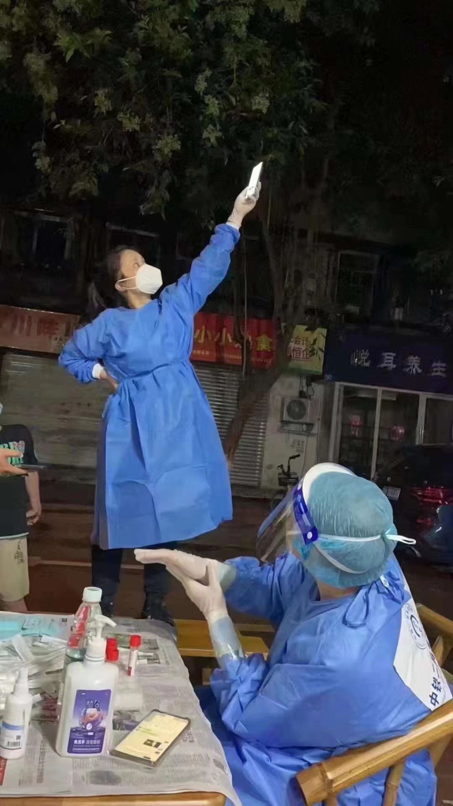

核酸码系统拆解与设计推演
王福强
2022年9月2日， 成都在做大规模核酸检测的时候，核酸码崩了，导致很多一线工作人员翘“脚”以盼（图片来源于网络）：

出现这种景象其实也不奇怪，因为所有的工作人员都认为是手机或者终端的信号有问题，举高高或许可以侥幸地让信号好一点吧，所以，出现这样的景象也不奇怪。
但为什么所有人都会认为是信号不好呢？ 因为行业惯例，当客户端（也就是手机终端）发送请求给后端服务器，但迟迟收不到响应的时候，为了产品体验或者给用户一个交代，客户端往往就在超时（timeout）之后，提示用户网络不好，所以，才会导致所有人都认为是网络不好，举高高或许能好。
但这只是表象，如果大家都只看表象，那么，东软甩锅给网络也就不奇怪了，但我们是技术人，我们是技术出身的人，我们专业，所以，看到这些就会很荒谬，源于我们可以透过这些表象看到本质。
核酸码，按照同城波总（王晓波）的说法， 其实是核酸、码两套系统。
每个人要做核酸之前，通过小程序打开的二维码是「码」系统，这个系统的重点在读（Read）， 所以，当有些地方的核酸码打不开的时候（其实也是压力太大崩了），优化的思路往往就是优化“读”的思路，比如加缓存，比如加CDN，比如加图片压缩，等等。
工作人员手持的手机或者终端里安装的APP叫「核酸」系统， 这个系统的重点在写（Write），扫码之后，要把你核酸码的信息写入系统，然后再与试剂关系绑定，交给检测机构，检测机构在检测完成后，再把检测结果与你的核酸码信息更新到统一的状态存储，这样，个人在自己手机上打开核酸码之后就能看到最新的核酸检测结果（绿码、黄码、红码）。
扶墙老师没有参与这种系统的建设，所以，很多细节并不清楚，只是根据观察现场推演的大体流程。
有了这个前提，我们继续拆解核酸系统为什么转圈圈没有响应。
首先就是要理解HTTP协议，因为现在近乎所有的APP都是用的这个协议与服务器端做通信交互，当然啦，也不用理解的太深，只要了解HTTP的基础特点就好了，那就是它是一种请求-响应式的交互协议， 就好像我喊你一声，你回我一句。 这里的问题在于，我喊你一声之后，你没有回我，那到底是你没听到呢？ 还是听到了却不回我呢？
核酸系统其实也是一个道理， 到底是服务器端没有收到请求呢？ 还是收到了请求而无法回复呢？
如果是没有收到请求，那99%的概率是网络问题，这肯定没跑儿了。
如果是收到了请求但无法回复，那跟网络一点儿关系都没有，问题出在服务器端。
但不管哪一种情况，我们前面说了，APP客户端都会告诉用户“网络不好”，所以，很多人就真认为是网络不好。
但当你又能刷抖音，又能用微信的时候，唯独核酸码“网络不好”，这个就说不过去了，因为大路（网络）就一条，别人能出去并回来，你不能，问题，肯定不是路的事儿，而是你服务器端的事儿。
服务器端大概率是因为大量请求导致挤压处理不过来，从而瘫痪，无法给各个请求客户端发送响应，从而导致超时，客户端在超时的情况下给用户一个很友好的“网络不好”的提示。
事实上，传言东软设计的核酸码系统就用了一个表来承载所有的数据存储和处理，很大概率是真的，因为单表的并发瓶颈很明显，稍微有点儿架构常识和互联网从业经验的人都做不出这么傻逼的设计。
设计如果从开始就有缺陷，后期怎么补都是很难的，虽然可以勉为其难，比如上线之前做全链路压测，如果发现哪里有问题和瓶颈，就改善哪个环节，这也是可以的，可惜东软好像这些也没做，或者根本就不知道有全链路压测这样的工具吧！
最后，让我们总结下：
从业几十年，做系统的设计，可以牢牢抓住两个关键因素，即读和写，抓住了它俩，基本系统设计可以极大简化。
如果设计上没有把控力，那就工程能力来补，比如用好全链路压测这种工具，通过工程实践和工具来一一地发现问题、解决问题。
当然，设计与工程能够合理搭配，那就最好了。
「为AI疯狂」星球上，扶墙老师正在和朋友们讨论有趣的AI话题，你要不要⼀起来呀？^-^
这里
- 不但有及时新鲜的AI资讯和深度探讨
- 还分享AI工具、产品方法和商业机会
- 更有体系化精品付费内容等着你，加入星球(https://t.zsxq.com/0dI3ZA0sL) 即可免费领取。(加入之后一定记得看置顶消息呀！)

开天窗，拉认知，订阅「福报」，即刻拥有自己的全模态人工智能。